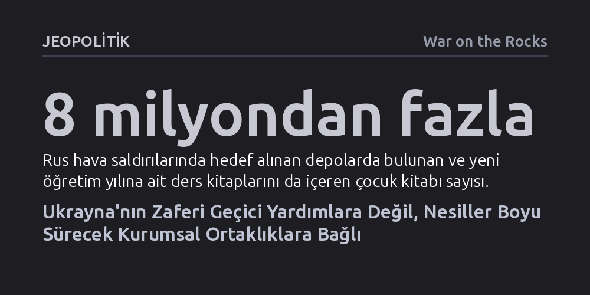

JEOPOLITIK · War on the Rocks · 2026-10-23
Batı'nın kıştan kışa uzanan geçici yardım döngüsü, Rusya'nın Ukrayna toplumunu zamana yayarak tüketme stratejisini engellemeye yetmiyor. Kalıcı bir zafer, savunma sanayisinden eğitime kadar yerel kurumları ayakta tutacak nesiller arası ortaklıklar kurulmasını gerektiriyor.
Ukrayna'daki zaferin yalnızca cepheye gönderilen silahlarla değil, eğitimden enerjiye kadar sivil kurumları nesiller boyu ayakta tutacak uzun vadeli ortaklıklarla kazanılabileceğini gösterir.

2023 sonbaharından bu yana Ukrayna ile Batılı müttefikleri arasında değişmeyen bir döngü yaşanıyor: Ukraynalı yetkililer Rusya'nın yaklaşan kış öncesinde enerji altyapısını çökerteceği konusunda uyarılarda bulunuyor; müttefikler şebekeyi korumaya yetmeyecek kısıtlı yardım paketleri açıklıyor; Ukrayna toplumu yaratıcı çözümlerle donmaktan kurtulup kışı büyük bir felaket yaşamadan atlatıyor. Bahar geldiğinde ise Batılı başkentler derin bir nefes alıp bir sonraki sonbahara kadar dikkatlerini başka meselelere yöneltiyor. Bu durum, müttefiklerin Ukrayna'daki savaşa temelde kısa vadeli ve plansız bir kriz yönetimi anlayışıyla yaklaştığını ortaya koyuyor.
Bu yaklaşıma genellikle 'tek bir sihirli hamle' beklentisi eşlik ediyor. Karar vericiler, Ukrayna'ya çok gelişmiş bir silah sistemi sağlandığında, belirli bir Rus yetkiliye yaptırım uygulandığında veya taraflar bir müzakere masasında buluşturulduğunda savaşın mucizevi biçimde sona ereceğini varsayıyor. Açıklamalar yapmak, yaptırım kararları almak ve acil askeri yardım paketleri açıklamak demokratik hükümetler açısından hem hızlı hem de seçmenlere kararlılık mesajı vermenin en zahmetsiz yolu. Batı'nın sağladığı askeri donanım Ukrayna ordusunun cephedeki kahramanca direnişi için vazgeçilmez olsa da savaşı yalnızca bu tür anlık ve dar kapsamlı hamlelerle bitirmek mümkün değil.
Moskova'nın Ukrayna'yı çökertme çabası, Batı'nın aradığı hızlı ve tekil kırılma anlarına dayalı değil. Rusya, Ukrayna devletini ve toplumunu tek bir günde yok edemeyeceğini bildiğinden, savaşı gündelik yaşamı ve sivil dokuyu yavaş yavaş aşındıran bir yıpratma sürecine dönüştürdü. Ukrayna halkı son dört kıştır elektrik şebekesinin çökmesini engellemeyi başarsa da soğuk binalarda çalışmak, kesintiler altında çocuklarını okutmak ve hayatlarını asgari bir düzende tutmak zorunda kalıyor.
Rus saldırılarının son dönemdeki hedefleri bu stratejinin vahametini gözler önüne seriyor. Saldırılar doğrudan cephe hatlarını değil; yeni eğitim dönemine ait ders kitaplarını barındıran 8 milyondan fazla kitabın bulunduğu depoları, veri merkezlerini, mobil iletişim istasyonlarını ve ulaşım hatlarını hedef alıyor. Koronavirüs salgınından hemen sonra işgalle karşılaşan yaklaşık beş milyon çocuk, yıllardır sığınaklarda ya da soğuk dersliklerde eğitim almaya çalışıyor. Okullar kapandığında ebeveynlerin iş hayatından çekilmek zorunda kalması ekonomik çarkları durdururken, altyapısı çöken şehirlerde yaşamak giderek imkânsızlaşıyor.
Ukrayna'da kriz ve savaş ortamında yetişen genç kuşak, sıklıkla 'zafer nesli' olarak nitelendiriliyor. Bu gençler cepheye taktik üstünlük kazandıran insansız hava araçlarını sıfırdan geliştiriyor, karanlıkta kalan kentlerin ısınması için yenilikçi teknolojiler üretiyor ve yıkılan şehirleri yeniden ayağa kaldırıyor. Ancak bu tanımlama aynı zamanda ağır bir gerçeğe işaret ediyor: Ukrayna'nın nihai zaferi, önümüzdeki on yıllar boyunca bu genç kuşağın ülkeyi yeniden yaşanabilir kılma, ekonomiyi canlandırma ve sınırları koruma konusundaki başarısıyla ölçülecek. Dolayısıyla zafer, kısa sürede varılacak bir barış anlaşmasından ziyade nesiller boyu sürecek bir inşa projesidir.
Neyse ki bu nesiller arası projenin nasıl hayata geçirilebileceğine dair çalışan bir model mevcut. Ukrayna Savunma Bakanlığı, Danimarka başta olmak üzere bazı müttefiklerle ortak üretim anlaşmaları imzalayarak yabancı yatırımları doğrudan yerel savunma sanayisine yönlendirdi. Bu modelde bağışçılar sadece hazır silah göndermekle yetinmiyor; yenilikçi Ukraynalı şirketlerle doğrudan ortaklık kurarak üretimi sahada finanse ediyor. Böylece hem cephenin acil ihtiyaçları karşılanıyor hem de Ukrayna ekonomisinin ve güvenliğinin geleceğini garanti altına alacak sürdürülebilir bir sanayi temeli atılıyor.
Savunma teknolojilerinde başarı kazanan bu ortaklık mantığının, Ukrayna'nın hayatiyetini koruyan diğer alanlara da taşınması gerekiyor. Örneğin kentin kuşatılması sırasında tahliye edilerek faaliyetlerini Kiev'de sürdüren Mariupol Devlet Üniversitesi, hem işgal altındaki topraklarda yaşayan gençlere yüksek ve düşük teknolojili yöntemlerle ulaşıyor hem de Mariupol'ün kültürel mirasını yaşatıyor. Üniversite, gençleri savaş ekonomisinde geçerli mesleki becerilerle donatırken, yerinden edilmiş toplum kesimlerinin kendi kökleriyle bağını koparmasını engelliyor.
Rusya cephede kesin bir askeri ilerleme sağlayamasa bile, devletin omurgasını oluşturan temel kurumları aşırı yük altında ezerek Ukrayna'yı içeriden felç edebilir. Bugün Ukrayna'da temel eğitimdeki devasa boşlukları kapatmaya çalışan ve ülke içinde yerinden edilmiş yaklaşık 4 milyon insanın topluma uyumunu sağlamaya uğraşan kurumlar ciddi bir kaynak sıkıntısıyla karşı karşıya. Ukrayna hükümetinin bu kurumları tek başına ayakta tutmaya ne zamanı ne de bütçesi yetiyor. Batı'nın, felaket kapıya dayandıktan sonra telaşla yardım ulaştırmak yerine, bu tür kilit kurumlara doğrudan ve uzun vadeli yatırım yapması gerekiyor.
Batılı diplomatların ve kanun yapıcıların, savaşı diplomatik salonların parlak sunumları veya jeopolitik pazarlıkların soyut kavramları üzerinden değerlendirmeyi bırakması gerekiyor. Gerçek bir ortaklık kurmak, bombalanmış bir binanın apartman girişini onarmak gibi en somut ve yerel ihtiyaçları dinlemeyi zorunlu kılıyor. Bu diyaloglar alışıldık diplomatik nezaketten uzak, Batı'nın kurallara dayalı düzen vaatlerine inanıp hayal kırıklığına uğramış bir halkın öfkesini barındırabilir; ancak tam da bu samimiyet politika yapıcılara meselenin insani boyutunu gösterecektir.
Ukrayna'nın geleceğini teminat altına almak, her sonbaharda yaşanan acil krizlere geçici fonlar ayırmaktan çok daha fazlasını gerektiriyor. Müttefiklerin sorması gereken asıl soru, Ukraynalı gençlerin dedelerinin yaşadığı topraklarda güvenle yaşlanabilmesi için bugünden hangi kurumsal temellerin atılması gerektiğidir. Bu geleceği inşa etmek hızlı ve kolay bir zafer vadetmese de Ukrayna'nın bağımsız bir ulus olarak varlığını sürdürmesinin tek gerçekçi yoludur.